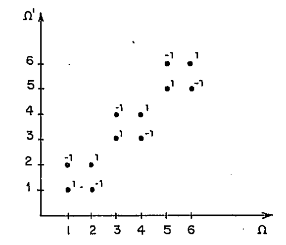
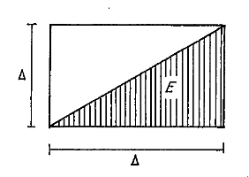

5.3 Exemplos e aplicações
5.3.1 O Teorema de Tonelli pode não ser aplicável se \(\mu\) e \(\gamma\) não são \(\sigma\)-finitos
Seja \(\Omega = \Omega' = [0, 1]\), \(\mathscr{A} = \mathscr{A}' = \text{borelianos}\), \(\mu = \text{medida de Lebesgue}\), \(\gamma = \text{medida da contagem}\). Seja \(\Delta = \{(\omega, \omega'): \omega = \omega'\}\). Como \(\Delta\) é fechado \(\in \mathscr{A} \times \mathscr{A}'\) e \(I_\Delta\) é \(\mathscr{A} \times \mathscr{A}'\)-mensurável. \[\int_\Omega \left[\int_{\Omega'} I_\Delta(\omega, \cdot) d\gamma\right] d\mu = \int_\Omega 1 d\mu = 1\] \[\int_{\Omega'} \left[\int_\Omega I_\Delta(\cdot, \omega') d\mu\right] d\gamma = \int_{\Omega'} 0 d\gamma = 0.\] O Exerc. 12 contém um exemplo de um produto de dois espaços de medida, um deles não-\(\sigma\)-finito, no qual o Teorema de Tonelli ainda pode ser aplicado.
5.3.2 A hipótese de integrabilidade no Teorema de Fubini não pode ser eliminada
\(\Omega = \Omega' = \{1, 2, \ldots\}\), \(\mathscr{A} = \mathscr{A}' = \text{partes de } \Omega, \mu = \gamma = \text{medida da contagem}\). \[f(\omega, \omega') = \begin{cases} 1 & \omega = \omega' \\ -1 & \omega = 2i+1, \omega' = 2i + 2 \\ &\text{ou } \omega = 2i + 2 \text{ e } \omega' = 2i + 1, \\ &i = 0, 1, \ldots \\ 0 & \text{em outros casos} \end{cases}\]

Então, \[\int_\Omega \left[\int_{\Omega'} f(\omega, \cdot) d\gamma\right] d\mu = \int_{\Omega'} \left[\int_\Omega f(\cdot, \omega') d\mu\right] d\gamma = 0\] e \[\int_{\Omega \times \Omega'} |f| d(\mu \times \gamma) = \int_{\Omega \times \Omega'} f^+ d(\mu \times \gamma) =\] \[= \int_{\Omega \times \Omega'} f^- d(\mu \times \gamma) = +\infty.\]
5.3.3 Fórmula de Integração por partes
Seja \(\Delta = [a, b]\) um intervalo onde os extremos podem ser finitos ou não. Seja \(\mu\) uma medida \(\sigma\)-finita sobre os borelianos de \([a, b]\) e \(f\) e \(g\) duas funções integráveis em relação a \(\mu\). Sejam \[F(x) = \int_{[a, x]} f d\mu, G(x) = \int_{[a, x]} g d\mu,\] \[F(y-0) = \int_{[a, y)} f d\mu \text{ e } G(y-0) = \int_{[a, y)} g d\mu.\] Temos o seguinte:
TEOREMA 5.3.3.1 (Integração por partes) \[\int_\Delta f(x) G(x)d\mu = F(b)G(b)-\int_\Delta g(y) F(y-0) d\mu.\]
Demonstração. Seja \(E = \{ (x, y): y \leq x\}\)

Seja \(h: \Delta \times \Delta \to \mathbb{R}\) definida por \[h(x, y) = f(x) g(y) I_E(x, y)\]
Agora \(h\) é mensurável e temos \[\int_{\Delta \times \Delta} |h| d(\mu \times \mu) = \int_{\Delta \times \Delta} |f(x)||g(y)|I_E(x, y) d(\mu \times \mu) \leq\] \[\leq \int_{\Delta \times \Delta} |f||g| d(\mu \times \mu) = \left(\int_\Delta |f| d\mu\right)\left(\int_\Delta |g| d\mu\right) < \infty\] Portanto \(h\) é \(\mu \times \mu\)-integrável. Por Fubini temos então \[\int_{\Delta \times \Delta} h(x, y) d(\mu \times \mu) = \int_\Delta g(y)\left[\int_\Delta f(x) I_E(x, y) d\mu\right] d\mu =\] \[= \int_\Delta g(y)\left[\int_{[y,b]} f(x) d\mu\right] d\mu =\] \[= \int_\Delta g(y)\left[\int_{[a,b]} f(x) d\mu\right] - \int_{[a,y)} f(x) d \mu \quad d \mu =\] \[= \int_\Delta g(y)[F(b)-F(y-0)] d\mu =\] \[= \int_\Delta g(y)F(b) d\mu - \int_\Delta g(y)F(y-0) d\mu =\] \[= F(b)G(b)-\int_\Delta g(y)F(y-0) d\mu.\]
Se agora integramos primeiro em relação a \(y\) e depois em relação a \(x\) temos \[\int_{\Delta \times \Delta} h(x, y) d(\mu \times \mu) = \int_\Delta f(x)\left[\int_\Delta g(y)I_E(x, y) d\mu\right] d\mu =\] \[= \int_\Delta f(x)\left[\int_{[a,x]} g(y) d\mu\right] d\mu = \int_\Delta f(x)G(x) d\mu.\] Temos portanto que \[\int_\Delta f(x)G(x) d\mu = F(b)G(b)-\int_\Delta g(y)F(y-0) d\mu,\] o que prova o Teorema. No Exerc. 15 encontra-se outra fórmula muito usada que é provada com a mesma técnica empregada neste Teorema.